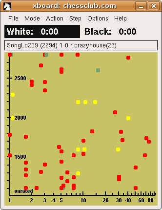
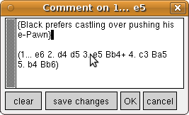
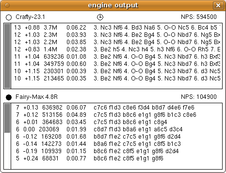
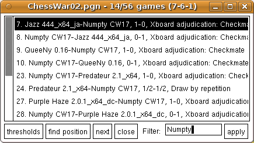
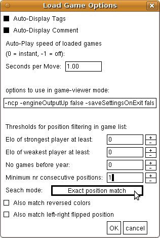
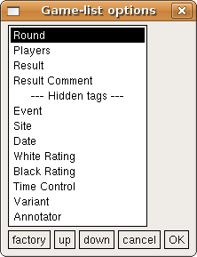

XBoard user guide
Xboard consists of a main window, displaying a chess board and clocks,
as well as a number of auxiliary windows dedicated to holding additional,
not strictly necessary information.
Depending on what you are using it for
(game viewer, playing on internet server, playing with engine(s)),
that information could be useful or irrelevant,
and you can open or close these windows accordingly.
The auxiliary windows are:
- Game list, giving the table of contents of the loaded PGN file
- Comment window, where you can view or edit comments (and variations) to the move
- Tags window, where you can see and edit the tags of the currently loaded game
- Move list, where the moves of the current game are shown as text
- Engine output, where you can see the variations an engine is dreaming up
- Evaluation graph, which shows you how the engine score evolves over the current game
- ICS interaction console, a terminal window where you communicate with an internet server
These auxiliary windows can be kept open all the time, and tiled so they are always in view,
without disturbing the operation of the main (chess-boadrd) window.
In addition, there are a large number of dialog windows that grab the full attention of the user interface,
so that the block operation of anything else.
These are used for altering the settings of XBoard during the session.
Below we will first describe the operation of the main and auxiliary windows in detail.
After that the function of the various menu dialogs will be discussed.
The main XBoard window
The main window contains several elements:
- A title bar, actively used to display information
- A menu bar, through which you can control XBoard
- Two chess clocks, for white and black
- An optional button bar, with which you an navigate through the current game
- A single-line message field, where moves, variation, and sometimes texts are displayed
- An area where the chess board (and sometimes other stuff) is drawn
The elements are mostly operated using the mouse, sometimes in combination with the keyboard.
Many keystrokes have been assigned a shortcut function, however, as an alternative to operating the menu bar with the mouse.
It is mainly non-printable keystrokes involving Alt and Ctrl key that act as shortcuts;
typing printable characters make an input box pop up where you can finish the typing while you see it,
to type stuff to XBoard (e.g. chess moves).
The menu bar is otherwise a quite normal menu bar, that you can operate both with left and right mouse button.
The message field above the board has no input function,
and is only used to display simple error messages (such as "It is not your turn"),
or alerts ("draw pawn backwards to under-promote"),
the last move played,
or the latest 'principal variation' computed by an engine.
The button bar to the right of the message field
is used to step through the currently loaded game, move by move, or directly to beginning or end.
This can also be done through the menu (very clumsy!) or with the arrow keys on the keyboard (probably preferable).
|

|
The principal element of the main window is the chess board.
Its main function is of course to enter chess moves, but it has several other functions as well.
To move pieces, you use the left mouse button (button 1).
You can do this either by first clicking the piece you want to move,
and then the square you want to move it to ('click-click move'),
or by 'grabbing' the piece by pressing the mouse button,
drag it to its destination square, and release the mouse button there ('drag-drop moving').
Normally XBoard would show you the piece being dragged around
(although this 'animate dragging' can be switched off).
The move you just made can be highlighted by drawing colored borders around the from- and to-square,
or by drawing an arrow between them.
With click-click moving the first click selects the piece, and such a selected piece will already be highlighted.
You also would get this effect after dragging around a piece, but releasing it on its original square;
this simply counts as a static click on the piece.
You still have the possibility to select another piece, by clicking it:
only a clicked empty square or opponent piece will be interpreted as a to-square.
You can also deselect the selected piece by clicking it, in which case the highlight on it will go off.
Keeping the Shift key down while entering a move gives it a special meaning:
the move is in that case not added to the mainline of the game (possibly truncating it first),
but as a variation, so that you can Revert to the original game later.
Variation board - A right-click (anywhere) on the chess board will normally be taken as a request to 'walk' the latest principal variation indicated by an engine.
This would normally be the one displayed in the message field.
By keeping the right mouse button (button 3) down, and moving the mouse vertically,
XBoard will start to step through the moves indicated by the engine,
so you see them played out on the chess board.
(This is sometimes called a 'variation board'.)
You can continue to step forward and backward through the engine line as long as you keep the button down.
The variation board is only useful when playing with engines.
When logged on to an Internet Chess server,
there is an option to push observation of other games while you are playing 'to the background'.
That is, boards from those other games are not immediately displayed, overwriting your own position,
but XBoard will silently remember the most-recent such board.
You can then have a peek at it by right-clicking the board, for as long as you keep the mouse button down.
On release the board switches back to displaying your own game.
This can be useful in bughouse to see how your partner is doing.
When setting up a position ('Edit Position mode'), things work a bit differently,
because you are not bound by any chess rules in that case.
In a click-click move any second click would be a to-square,
even if it captures a piece of your own.
You will also be able to move empty squares and even 'capture' pieces with them,
or drag pieces off the board to get rid of them.
But the most important difference is the function of the right-click,
which now is used to put a new piece on the square you clicked.
Depending on the settings, this can either go through popping up a menu from which you select,
or by making a vertical sweep with the mouse, keeping button 3 down,
which will make the identity of the newly introduced piece cycle through all possible choices,
so that you can release the button when you see the one you want ('sweep selection').
This will always start by dropping a Pawn in the clicked square (as you typically need those most);
this will be a black Pawn unless you kept the Shift key pressed, (or use button 2),
in which case it starts with a white Pawn.
|

|
The clocks are mainly meant as output fields, but in some situations they also accept mouse clicks.
What the clicks do varies.
They can be taken as a signal you want to claim the game because the opponent has flagged
(when his clock displays a negative number).
When you keep the Shift key pressed during the click, you can adjust the clocks by adding (right-click) or subtracting (left-click) a minute.
In situations where this could be meaningful, clicking the clock of the side that does not have the move will transfer the turn to him.
(Such turn passing is obviously illegal in chess, so you cannot do that while playing a game,
but in analysis or for setting up a position, it can be useful and is allowed.)
When setting up a position, clicking the clock of the side that already has the move
will clear the board.
Seek graph - When logged in to an Internet Chess Server, the area where the board is normally drawn doubles as 'seek graph',
where you can see who is looking for what type of game.
This only applies when the board is not in use, i.e. when you are not playing, examining or observing a game.
In this 'idle' mode, left-clicking the board anywhere will request information from the ICS and draw the seek graph accordingly.
Left-clicking on a dot in the seek graph makes you challenge the corresponding player,
while left-clicking off-dots would erase the seek graph, and replace it by the normal board display.
Right-clicking the seek graph off-dots would refresh it (only needed on ICS that cannot do that automatically).
On a busy server dots can sometimes cluster so densely you no longer can reach those that hide behind others;
in this case right-clicking on a dot would 'push it to the back', so that dots behind it now get to the foreground.
When you hover over a dot the message window will show you the details of the corresponding seek ad,
and an exclamation point there will warn you there were dots hiding behind it.
|
- Detour Under-promotion (General Options) determines if a promotion menu will pop up on promotion moves
- -pieceMenu (command-line option) determines if a right-click invokes a menu in Edit Position mode
- Drop Menu (General Options) determines if a right-click in bughouse invokes a drop menu
- Animate Dragging (General Options) determines if you will see the piece being dragged
- Seek Graph (ICS Options) determines if left-clicks can call up the seek graph
- Highlight Last Move (General Options) controls if clicking squares highlights them
- Highlight with Arrow (General Options) controls if an arrow is drawn between from- and to-square
- One-click moving (General Options) can make a piece move by clicking only from- or to-square
- Show Target Squares (General Options) marks square where the selected / dragged piece can move to
- Hide Thinking from Human (General Options) determines if engine thinking is displayed in the message field
- -variations (command-line option) determines whether you can enter variations
- -showButtonBar (command-line option) determines whether the navigation buttons are present
|
The Comment window displays comments and variations from the PGN file belonging to the current move,
and will automatically update when you step through the game.
Left clicks in the Comment window are reserved for the normal editing functions (selecting, drag-drop editing).
The right button can be used to click on a PGN variation
(a sequence of alternative moves enclosed in parentheses) on the current move.
In this case XBoard will 'upgrade' this variation to become the main line of the curent game
(the original main line being shelved in its memory, so you can 'Revert' to it later).
You can then step through the variation to make it visible on the board.
- Auto-dispay comment (Load Options) causes automatic pop up whenever you encounter a commented move.
|

|
As its name suggests, the engine-output window is only useful when an engine is involved.
(This can be an engine you connect to through an Internet Chess Server, however.)
Engines print how they think the game would continue if both sides play the moves the engine considers best,
the so called 'Principal Variation',
at ever increasing search depth.
These PV lines are diplayed in the engine-output window, preceded by the search depth at which they were found,
and the score assigned to them, (plus the less interesting time and number of positions searched).
|

|
Left clicks in the Engine Output window are reserved for the normal editing functions,
although in this case only selecting for the purpose of copying would be a useful action.
The right button can be used to click on a PV indicated by the engine.
In this case that PV will be played out on the chess board when you move the mouse vertically with the button still down
(i.e. use the main board as 'variation board').
The behavior in analysis mode is a bit different from that in other modes:
when you release the button, the position on the variation board becomes the new position to analyse,
and all moves leading up to it will be added to the game.
Because the variation walk will start in the position after the first PV move there,
a static click on a PV would just make you play the suggested engine move.
In other modes, walking a PV will start at the end of the PV, and never change the game.
When you release the button, you will simply jump back to the original game.
When an engine produces a move, XBoard would force you back to the real game anyway, even without releasing the button.
Some engines support a multi-PV mode, where they don't only give continuations for the best move,
but also for second-best, or more.
In this case XBoard will print a header line above the PV's containing the words 'fewer' and 'more',
and when you right-click on those, the number of moves the engine calculates will be decreased or increased.
|
|
The Move List contains the game in SAN notation, with or without score/depth information included as comments to the moves.
Left clicks in the Move List are reserved for the normal editing functions,
although in this case only selecting for the purpose of copying would be a useful action.
Right-clicking on a move (in WinBoard: left-double-clicking) will navigate you to the position after that move
(i.e. display that position on the board, and allow you to step through the game from there).
- Scores in Move List (General Options) enables inclusion of engine score/depth
|

|

|
The evaluation graph displays how the engine score evolved over the game,
either as a histogram, or (when space gets too tight), as a drawn line.
If two engines are playing, each side has its own histogram / line,
distinguishable by their color.
Clicking in the graph navigates you to the position corrsponding to the point where you clicked.
- Zoom factor (General Options) set magnifiation of the {-1, 1} score range
- -evalThreshold (command-line option) minimum score to be considered different from 0
|
The Game List displays a table of contents of the urrently loaded PGN file as a listbox.
The lines in the listbox are composed of the PGN tags of the game,
in a user-configurable way.
Clicking on such a line would load the corresponding game, so you can navigate through it.
The currently loaded game will be highlighted in the list.
Using Up or Down arrow keys while the Game List window has focus will move the highlight to the previous / next game,
while typing <Enter> will load the game.
|
The Game List window includes a number of controls at the bottom,
to select a subset of the games for display in the window.
A 'Filter' field allows you to enter a text, where then only header lines containing that text will b displayed.
You can furthermore select on positions occurring in the game,
through the 'Find Position' button.
When you do that, only those games containing the position currently on the board
(or enough like it, according to the matching criterea you specified in the Load Game Options dialog,
reachable through the 'Thresholds' button)
will remain in the list, in that case.
|

|
The Tags window is a text window that supports normal editing functions,
but otherise has no special functions.
It can be used to view or edit the PGN tags of the stored game.
To save any changes brought about by editing, you have to press a button at the bottom of the window.
- Auto-display Tags (Load Options) cause automatic popup on loading a game
The Tags window is a text window that supports normal editing functions,
but otherise has no special functions.
It displays moves available for the current position (displayed on the board) in the currently installed opening book.
To save any changes brought about by editing, you have to press a button at the bottom of the window.
Menus
Most menus speak for themselves.
Many of them are for bringing up menu dialogs, (discussed below), where the real action will take place.
The Forward, Backward etc. items in the Edit menu do the same as the buttons above the board;
you can step through a game in progress, but only for viewing past positions;
Backward will not retract any moves.
The Retract Move item in the Engine menu is for that.
The Book item in the Engine menu queries the engine for its own book moves,
and has nothing to do with XBoards own opening book.
Items that deserve explanation are Revert and Annotate in the Edit menu.
These items become enabled as soon as you have shelved the main line of the loaded game,
by 'upgrading' a variation to new main line.
This can be done by right-clicking an already present vaiation in the Comment window,
or by entering a move (not at the end of the game) while keeping the Shift key pressed.
With Revert you would abandon such an upgraded variation, and restore the old main line.
Annotate does the same, but adds the abandoned variation as a (PGN variation) comment to the preceding move.
So you typically would use Revert to revert from variations that were already in the game,
and Annotate for a variation that you entered yourself, move by move.
Of course you could use Revert in that case as well, if you don't think the abandoned variation is worth saving
(e.g. after receiving a very poor analysis score).
Mode menu
The Mode menu might require some more clarification than others.
It is used to determine what XBoard will be doing.
E.g. Machine White and Machine Black will set XBoard to let the user play against the (first) engine,
while Two Machines will make first and second engine play against each other.
In both cases XBoard will revert to idle mode after the game finishes.
Machine Match starts playing the two engines against each other for a number of games (aternating the colors).
This match will stop when you click the menu item again (after the game in progress finishes!),
or when the number of games set in the Match Options dialog is reached.
Edit Game will allow the user to enter moves for both sides;
if a (first) engine is loaded, it will still check the moves for legality, though,
(so you cannot use XBoard to edit the game of a variant the engine does not play!),
but it will not think about them.
Edit Position allows you to set up a position.
Analysis mode is similar to Edit Game mode in that the user plays both sides,
but now the engine is thinking, and you can follow its thoughts about the current position in the engine-output window.
With Analyze Game, you will make XBoard step through the currently loaded game automatically,
while the engine is analyzing every position in it.
The results of this analysis are then added to the moves as comments
(i.e. score / depth as comments, as well as the PV indicated by the engine in PGN variation format).
ICS client is only available when you are already connected to an Internet Chess Server,
and allows you to continue interacting with it after you have been switching to another mode to do something locally.
(Such as loading a game from a file, in order to upload it to the ICS for examining,
or editing a game with comments in order to save it.)
|


|
The General Options dialog contains mostly on/off options.
Most options speak for themselves, or have already been discussed in the section on the board window.
Animate dragging / moving control whether the pieces move to their destination
square in a continuous fashion, rather than instantly jumping there.
The latter is for click-click moves or moves from an external source (file, engine, ICS),
the other for drag-drop moving.
Blindfold suppresses display of all pieces, so the board will always look empty.
Auto-flag terminates the game when one of the players flags
(or at least sends a request to that end to the ICS).
Auto Flip View will put the side you are playing at the bottom of the display,
when playing against engine or on ICS.
(By default white is at the bottom,
but the Flip View men item or F2 key can change this manually).
Ponder Next Move will cause an engine to think also when its opponent's clock is running.
Periodic Updates is a feature only relevant for analysis with an engine,
and let the engine send a constant stream of updates on what it is doing,
rather than just new variations.
Absolute analysis score means that in analysis positive scores mean white has the advantage.
(Normally engines report scores from the point of view of the side to move.)
XBoard has the possibility to make pieces that move blink on and off a few times on their to-square (Flash Moves).
You can suppress popup of several popups (e.g. drop menu in favor of PV walking).
Test Legality will already make XBoard refuse entry of illegal moves;
when you switch it off, you can enter them, but an ICS or engine would still rfuse them,
and XBoard would then take the move back.
Switching it off can be useful, though, when you use XBoard for a chess variant it does not know the rules of.
In that case the engine will be the final authority on what moves the user can enter.
Some other options won't work when legality testing is off:
XBoard won't be able to adjudicate checkmates and stalemates, 'Show Target Squares' where a pickedup piece can move to,
or use 'One-click Moving' (see below).
Two options affect how you enter moves.
One-Click Moving automatically moves pieces you click to the only square they can move to when this option is on.
As an alternative, it allows you to click empty squares, and if you have only a single piece that can move there,
XBoard will make that move.
Finally, clicking on an already selected piece (in practice usually double-clicking an unselected one) will force it to make the only capture it can do.
|
Detour Under-Promotion is a novel way to handle pawn promotions:
Moving the pawn forward to its promotion square will automatically give you a queen,
but in the rare case you want something else, you can drag the pawn backwards first,
upon which it will start changing identity.
When it finaly becomes the piece you want, you then move it forward to the promotion square.
If the option is off, you will be prompted for a choice with a popup (shown left).
With One-click moving you will only get a promotion choice when clicking the pawn;
clicking the promotion square will always give you queen.
A command-line options -alwaysPromoteToQueen can force this anyway, in stead of the popup.
|

|
|

|
XBoard allows you to save games or positions manually,
but in the Save Options dialog you can make arrangements for this to happen automatically at the end of any game.
If you specify a file for this, all games will be appended to the file.
(XBoard never over-writes game or position files, but always appends.)
If not, it will prompt you for a file name every time it saves,
proposing a name derived from the players.
It is recommended to alays save as PGN.
Other thing you can set here are the text in the Event tag,
whether score & depth of engine moves will be saved as comment to the moves,
whether the score when the engine came out of book will be saved as a PGN tag,
and whether tourney games will get s Number tag with a sequence number.
|
|
XBoard can recognize checkmates and stalmates,
and end games when they occur without waiting for the engine to claim it.
It can thus also check if engines claim these events unjustly, and forfeit them for that.
Positions without mating potential can be recognized in the more common variants,
and be declared draw instantly.
Some material combinations that would only allow helpmates (such as KBKN) can also be adjudicated draw after a short delay,
under contro of the 'Trivial Draws' option
You can also set the number of repeats and reversible moves after which a draw should be declared,
or cut short excessively long games by delaring draw.
Setting these values to 0 disables the corresponding adjudication.
You can let XBoard declare a win when both engines agree one is so much behind that further playing is pointless (Win / Loss Threshold).
For this to work, the engines must report the scores in the conventional way
(i.e. positive meaning they think themselves ahead, even when playing black).
Two options allow you to flip the black score of non-compliant engines.
|

|

|
This dialog allows you to set some parameters valid for all engines,
such as their hash-table size, size of their tablebase buffer, the number of cores they can use,
and where you have installed the tablebases on your system.
Almost all UCI engines (run through the Polyglot adapter) need these parameters.
For native XBoard engines these settings often are ignored,
because they don't support the necessary commands to set them through the protocol.
'Polyglot directory' is where the Polyglot executable is to be found;
on Linux this can usually stay empty, becaue Polyglot is installed in a directory that is searched automatically
when you issue a simple 'polyglot' command.
Opening book - The remaining options are for controlling the opening book used by XBoard.
This book can be used to play openings for the engines, without the engines being consulted.
(The moves selected by XBoard from the book will be forced to the engine,
and the engine will be started to think for itself only when XBoard gets out of book.)
You can specify any opening book in Polyglot format as book file,
but to make it possible for XBoard to use it, 'Use GUI Book' should also be checked.
This still does not mean XBoard will use the book for all engines;
to use it for a specific engine, the 'Has Own Book' option for that engine should be switched off.
By default it would be switched on after loading an engine,
except when this engine was installed with the explicit request to use the book.
In tournaments you can overrule this default, though, and make all participants start from the GUI book
unless they explicitly request to not use it
(which they almost never do, unless you edited the engine list by hand).
Finally you can set for how many (full) moves the book should at most be used,
and specify the book variation by a number from 0 to 100:
100 would mean totally random selection of all moves the book has for the current position,
while 0 would mean it only plays the best move(s) listed in the books.
The value 50 here would play the moves in proportion to the probabilities the book suggests.
|
|
To start using a different engine (or start using one when you so far were in game-viewer mode only)
you can select one with the aid of this dialog.
If the engine is already 'installed', i.e. present in the list maintained in XBoard's setting file,
you can simply select it from the drop-down list at the top of the dialog.
You then only have to select if you want to load it as first or second engine,
and can press OK.
The rest of the dialog is then not used.
Only to load an engine never used before the rest of the dialog becomes relevant.
You can specify the engine command there, which can be done by browsing to the executable for that engine.
Some engines might need other stuff on their start command than just their name, however,
like '-xboard', or a specification of the hash size.
You must tick a box if the engine is UCI.
By default it will be assumed you want to remember this new engine in the engine list,
so that next time you can select it directly from the drop-down list.
If you don't want this, you can untick the 'Add to list' chackbox.
You can also specify a 'nickname', whih is the name under which it will appear in the drop-down list,
if you are not satisfied with the name of the executable.
(Some engines have horribly cryptic names for their command,
and you might want to install versions of the same engine with different settings,
and use nicknames to keep them apart.)
Other checkboxes allow you to determine if this engine should request using XBoard's opening book,
if it is an obsolete engne using version 1 of the protocol
(whih would otherwise take many seconds to load),
and if the engine should be installed to always play the currently active variant
(this is only usful for engines that do not play normal chess).
|

|

|
In the View menu there is the Board Options dialog to make you configure the look of the board.
There ae two modes for rendering board squares: through an externally given (pixmap) image file, or evenly colored.
In the latter case you can select the colors with the 'color pickers' at the top of the dialog.
In XBoard colors are indicated by hexadedecimal numbers for their Red, Green and Blue value.
This cryptic notation is displayed in a text-edit, and if you understand the coding system,
you could alter it to the color you want by typing a new code.
(Hint: the first two letters behind # are for red, the next two for green, and the last two for blue.)
Otherwise you can set the color experimentally, using the buttons behind the text edit
to make it a bit redder, greener, bluer or darker.
To see what you are doing the color is displayed behind the text edit.
This is also a button, though, and if you press it, it restores the color to the default.
You can set square color, piece color and highlight colors through this method.
To use image files for board squares, you must specify the pixmap files from which the light and dark squares are cut.
These files must contain an image at least as big as the square size,
The cutting algorithm is such that it tries to minimize the overlap between cut squares,
and that when you specify an image exactly the size of the entire board,
the squares tile to recover the complete image undamaged.
The width of the highlight lines can be hand-tuned with the 'Line Gap' option.
You can also specify external pieces, as bitmaps or pixmaps.
A complete set of pieces of the current board size would have to be contained in the specified diretories.
The other options speak for themselves.
|
|
XBoard cannot generate sounds by itself, but can invoke an external sound player to play a number of predefined sounds.
These sounds can be coupled to certain events, like your opponent making a move,
the game ending in a win, loss or draw, etc.
Many of the events can only ocur when you aue XBoard to connect to an Internet Chess Server,
such as someone challeging you for a game, others sending you a 'tell' message, a 'shout' being broadasted on the server.
For each of the events there is a drop-down list from which you can selet the sound you want to hear when it occurs.
Apart from the predefined sounds that come with XBoard,
you can supply your own sound files:
yust select one in the text edit at the top,
and choose 'Above WAV File' from the drop-down list.
You can also select your preferred sound-player command, and the directory where the predefined sounds are stored.

|
There is one dialog that is special, because the user can decide what is in it!
It displays a number of buttons, which represent a command text to be sent to the Internet Chess Server you are connected to.
Each button could thus represent a command you frequently use,
and now can send with a single click of the mouse!
The button texts, and commands to send are all specified through the multi-line option -icsMenu,
which is stored in the settings file (~/xboardrc).
The easiest way to change it is probably editing this file (sorry about that...).
Buttons are described by "buttonText;command;" pairs, where the command can contain linefeeds
(i.e. be multiple ICS commands).
"$name" in the command will be replaced by currently selected text in the ICS console.
Commands ending with "$input" are placed in the ICS Input Box, rather than directly sent to the ICS.
If they start with "$add", they will be appended to text already in the ICS Input Box, rather than replacing it.
|
|

|
|
This dialog can alter settings relevant for playing on an Internet Chess Server.
On the right you can specify colors to be given to various type of messages coming from the ICS.
They consist of a comma-separated triple for font color, background color and ???.
To activate this, the Colorize option has to be ticked.
You can also switch premoving (i.e. entering your move in advance, whil the opponent is still thinking) on or off,
and specify premoves for the first move of the game.
An Alarm can be set to sound when the time left on your clock drops below a certain value.
(Use the Sound Options dialog to pick the sound!)
Auto-raise board pulls the board window to the foreground whenever there is activity,
while Quiet Play suppresses all messages coming from the ICS while you are involved in a game.
Get Move List is important for not missing the initial part of games you start observing when they are in progress,
but can be very disruptive if you observe more games at the same time.
|

|
The option Auto-Comment causes all text messages you receive from your opponent during game play
to be added as comments to the stored game, so they can be saved with the PGN.
Auto-Kibitz will cause the thinking output of an engine playing through XBoard on the ICS ('zippy mode')
to be sent through kibitz commands to opponent and observers.
At the same time it will cause such incoming kibitzed thinking output to be diverted to the engine-output window.
Seek graph controls if a left-click on the board while idle will bring up a graph of players seeking a game.
When this option is on, Auto-Refresh Seek Graph controls if it is automatically updated,
(works only on FIC and ICS, and consumes a lot of bandwidth),
or whether you have to right-click the graph (in an empty part) for that.
The color of the dots in the seek graph codes for rated / unrated / wild,
while the shape (circle / square) encodes for human / computer.
The option Background Observe suppresses display of any boards of observed games while you are playing.
The latest such received board can then be peeked at by right-clicking on the board, however.
In combination with this, you can use the experimental option Dual Board to see such background-observed games
on a separate board all the time.
Such observed games arenot recorded by XBoard though.
(I.e. you cannot save them on file afterwards, but you can of course always fetch them again from the ICS later,
and save them then.)
The Load Options dialog controls loading and slection of games from the game list.
After loading a game XBoard will normally auto-play it, by stepping through all positions from the beginning.
The stepping rate can be set here in seconds.
(This is one of the few numeric options where fractions can be specified.)
Specifying a negative number will suppress the auto-play, and leave the opening position in the display after game load.
Specifying 0 will instantly move to the final position, and leave that in the display.
You can select if the Tags window will automaticall pop up to show you the PGN tags of the game,
or whether the Comment window will pop up on display of any move that had a comment to it.
|

|
A text edit allows you to speify options XBoard that should take effect when XBoard is used as a game viewer
(i.e. with the -viewer option, as it is when invoked through clicking a PGN file).
By default this will be -ncp mode ('no chess program', i.e. without engine),
but you might prefer to start it with your favorite engine for analyzing games.
The other options are all for 'filtering' the game list, i.e. only display games that fit certain criteria.
You can specify Elo thresholds for only showing the games from a PGN file of players that are strong enough,
or restict the display to games played after a certain year.
This all works in combination with the 'Filter' field in the Game List itself,
where you can select based on a text occurring in the header lines.
You can also select games based on occurrence of certain positions in them.
The position you search should in that case be set up on the board.
To decide when a position is considered a 'match', six different, and progressively more liberal criteria can be used:
- The position must be exactly the same as the one on the board
- Pieces on the board must occur in the position exactly as given, but there could be extra material
- Only the Pawns must be exactly as on the board, but non-Pawn material could be anywhere
- The position must have the same material as is on the board, but it doesn't matter where
- The position must contain at least the material on the lower half of the board,
but can optionally have any subset of the material on the upper half in addition
- As above, but the optional material must be the same for black and white
In addition you can tick whether the first three comparison methods should also accept mirror images
(where vertical flipping will be accompanied by color flipping).
For the last three methods you can require that the imposed conditions are satisfied not for a single position,
but for a given number of consecutive positions.
Pressing the 'Find Position' button at the bottom of the Game List will apply the specified criteria.
Games loaded from a Game List filtered position will not auto-play,
but always load with the position search for as the currently displayed one.
|
|
Here you can set the parameters for matches and tournaments.
For (old-style) two-player matches only the options in the bottom half of the dialog are relevant:
you can select the default number of match games
(i.e. that used when you click the Machine Match item in the Mode menu),
the game or position file from which the games in the match will be started
(i.e. the games, presumably short opening lines, or position will be loaded first,
and the engines will then start to play from there),
and which game or position from the file should be used.
By specifying -1 or -2 for the latter you can make XBoard automatically step through all positions in the file,
taking the next one every game (-1) or every two games (-2, so they are played with both colors).
You can specify that after a number of games / positions have been used,
XBoard 'should rewind' to the first in the file.
The pause between matches is important for engines that do not support 'ping',
which have the nasty habit of sometimes producing a move for the previous game when the next game has already started,
(because the opponent unexpectedly resigned),
without XBoard being able to detect that.
Th only remedy is to wait long enough for such engines to finish their search and produce the move before the next game starts.
The file for saving the games can be set here, as well as from the Save Options dialog.
The other parameters, in the upper half of the dialog are only important for tourneys with more than two engines
(or at least, other than the two currently loaded engines),
see the page on XBoards built-in tournament manager.
|

|
With this dialog you can customize the lines in the game list.
The various PGN tags that are eligible for appearing there are displayed in a listbox.
You can select one of those by clicking it, and then move it up or down in the ranking with the buttons at the bottom.
Only tags above the 'hidden tags' item will be printed in the game list,
in the order they appear in the list box.
|
|

|